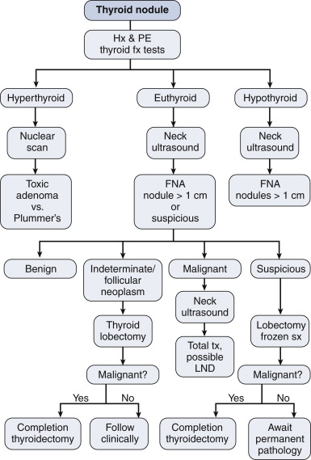
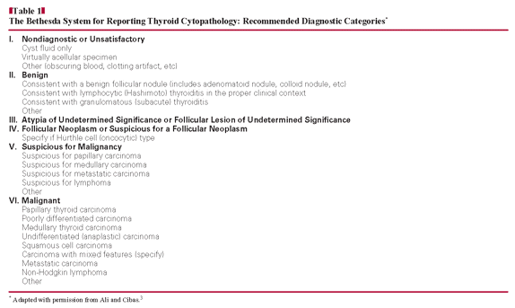

Thyroid Nodule
DEFINITION
Thyroid nodule.
D E A B M I M
EPIDEMIOLOGY
5% women
1% men
Risk Factors
Advancing age
Radiation exposure
Family hx goitre
Iodine deficiency
D E A B M I M
AETIOLOGY
Is it:
Solitary or Multiple?
Benign or Malignant?
Differential
Benign
Colloid nodule
Thyroid cyst
Thyroiditis
Follicular adenoma
Hurthle cell adenoma
Toxic adenoma
Plummer disease
Malignant
Papillary thyroid cancer (85%)
Follicular thyroid cancer (10%)
Hurthle cell thyroid cancer (5%)
Medullary thyroid cancer
Anaplastic thyroid cancer
Thyroid lymphoma
Distant mets to thyroid
- renal,
pulmonary and breast can go to thyroid.
D E A B M I M
BIOLOGICAL BEHAVIOUR
Principle
Must differentiate the few that are malignant (3-5%) from the many
benign.
Systematic approach of history, physical, labs, imaging, biopsy and
integration to plan.
Size matters
Generally, only evaluate nodules >1cm.
- most potential to be clinically significant
- cost benefit harm ratio does not support treating all small
lesions / cancers to save rare outcomes.
But do investigate if >1cm and concerning hx, eg:
- thyroid ca fam hx
- neck irradiation
- lymphadenopathy.
D E A B M I M
MANIFESTATIONS
Clinically stratify into low / med / high risk.
- based on risk factors, local and systemic features
Risk Factors
Age / sex
- cancer more likely if <20 or >60
- solitary nodule in a man has more risk.
Risk fx
Enquire
High risk if radiation (esp in childhood) or fam hx (thyroid and
other assoc. cancers)
- thyroid cancer syndromes include Cowden's, familial polyposis,
Carney complex, MEN II, Werner syndrome.
Local
Local invasion or infiltration if aggressive
- elicit dysphagia (liquid / solid), dyspnoea (possibly lying flat)
- voice change (recurrent laryngeal nerve invasion / tension /
traction).
- persistent nagging cough
Rapid growth, hoarseness, and neck pain are red flags
Systemic
Ie. from hormone production / underproduction
Signs
Thyroid exam
Including eye signs
Assess voice
Consider hypothyroidism
- weight gain, fatigue, depression, constipation, dry skin.
Consider hyperthyroidism
- weight loss, weakness, anxiety, palpitations, diarrhoea.
- cardiac assessment important if hyperthyroid.
In assessing the lump:
- midline structures e.g. cartilages still in midline?
- note thyroid size, symmetry, texture, presence of nodule and
tenderness.
- are there palpable nodules and do they move with swallowing?
- is inferior aspect of nodule palpable? If not; retrosternal?
- Pemberton sign
Concern for cancer if:
- fixed nodule
- gritty texture
- associated lymphadenopathy, usually ipsilateral.
D E A B M I M
INVESTIGATIONS
DIAGNOSTIC WORKUP

Thyroid Fx
TSH single best test
- if abnormal, then measure T3 and T4.
If low TSH, hyperthyroidism shows T4 elevated
- subclinical hyperthyroidism if TSH is low but T4 normal.
If high TSH, subclinical or clinical hypothyroidsm
- then measure thyroid autoantibodies for Hashimoto
- (remember those with Hashimoto can rarely develop a thyroid
lymphoma; rapidly growing mass).
Thyroglobulin
Increased in both benign and malignant thyroid disease
- so not useful in making a diagnosis or excluding it
Useful postoperative marker in pts with differentiated thyroid Ca,
as marker of how much remnant thyroid is left after thyroidectomy
- and disease recurrence after multimodal therapy for papillary and
follicular.
Calcium
Check serum calcium in all
patients who need surgery
Concomitant hyperparathyroidism is up to 5%
Imaging
Ultrasound
Very useful for nodules and adjacent lymph
Size and texture of gland, presence of thyroid nodules
Differentiates:
- solid vs cystic
- microcalcification
- vascularity
- associated cervical lymphadenopathy
Generally cannot differentiate benign from malignant; but
worrying factors with low specificity are:
- hypoechoic nodules
- irregular borders
- absent colloid halo sign and microcalcifications (assoc. with
papillary cancer)
- increased vascularity
--> any suspicious factors, surely requires FNA
Nuclear Medicine
If low TSH suggestive of
hyperthyroidism, do nuclear medicine scan.
- main benefit is to distinguish cause of hyperthyroidism, i.e.:
- checks isolated autonomously functioning nodules (toxic adenoma);
vs:
- Plummer disease (functioning nodules in a mng); vs:
- Graves disease
Benign vs malignant?
- 80% are cold, but only 20% of those are malignant
- 15% are normal functioning
- 5% are hot, only occasionally representing cancer (~1% of these)
Other Imaging:
Retrosternal goitre diagnosed by CXR, CT, MRI
- define extent and present of retrosternal component
- ?tracheal compression or deviation
CT without contrast in
pts with thyroid nodules
- ablation will be needed for thyroid nodules
- iodinated contrast could delay such therapy by up to 6 months
FNA
Clinical exam, labs and imaging are non-specific.
FNA is one of the best tools to sort out benign vs malignant.
- streamlines workup, cheap and few risks.
- seeding risk not supported by literature.
Technique
Palpation or USS guidance
23g or 25g inserted into nodule under direct vision
- aspirate cellular contents and place on slide for review
- need a minimum of six groups of cells for assessment
- if cell block specimens are done, immunohistochemical data can
support the diagnosis
False negative rate 3-5%, false positives are rare; 1%
--> reliably diagnoses more benign conditions as well as
papillary, medullary and anaplastic cancers
Papillary
Classic cytologic findings: nuclear crowding, cytopastic
clearing
- "orphan-annie eyes"
Medullary
Lack colloid, spindle-shaped cells, have amyloid
'Apple-green' birefringence under polarized light
Immunohistochemical stains for calcitonin are diagnostic.
Anaplastic
Hypercellularity, necrosis, pleomorphism
Follicular and Hurthle?
Cannot be diagnosed by FNA
Follicular Ca is cytologically bland; clumps of cells with
microfollicular pattern;
--> needs histology with evaluation of capsule for capsular /
vascular invasion.
Follicular neoplasms - 20% assoc. with malignancy, generally needing
resection.
Guidance
FNA not recommended for hyperfunctioning nodules
- vast majority benign
- and unreliable: hypercellular, usually monoclonal, lack specific
features.
FNA Classification
4 groups:
i) nondiagnostic
- need to repeat, e.g. with USS guidance.
ii) benign
- if no other red flags, repeat USS in 6-12mo
iii) indeterminate / suspect
- interpretation depends on clinical scenario
- minimum of repeat FNA or lobectomy recommended
- 20% 'follicular' will be malignant; 60% of 'suspicious'
iv) malignant
- appropriate staging and therapy
Bethesda

Risk of malignancy
I. 1-4%
II. 0-3%
III. ?5-10%
IV. 15-30%
V. 60-70%
VI. >97%
Adequate sample on FNA
1. average of 3 aspirates per nodule
2. ?3-4 slides per aspirate
3. six clusters of >20 cells after all slides examined
Diagnostic Surgery
Most common scenario here is when USS FNA recommends follicular or
Hurthle cell neoplasm
10-20% malignancy risk
Reasonable to then recommend thyroid lobectomy.
Also recommended when 'benign' shows a worrying clinical patter:
e.g. growing.
Intra-op Frozen Section?
- Useful if suspect for papillary, but not follicular or Hurthle
- also helpful for lymph nodes
- doesn't add much if FNA was definitely benign or definitely
malignant
Pregnancy and Nodules
Same, except:
- avoid radio-isotopes.
- surgery if reqd --> in 2nd trimester if cancer or growing
rapidly
- suppressive doses of thyroid hormone ok post-op
If given radio-iodine, wait 6-12 mo before conceiving.
Thyroid Cysts
Indications for surgery
Large cyst >4cm
Multiple aspirations
Blood stained aspirate
Cytology concerning
PMHx of irradiation
D E A B M I M
MANAGEMENT
As per diagnosis
D E A B M I M
REFERENCES
Cameron 10th